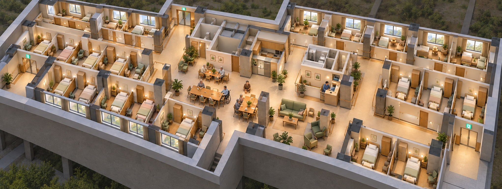
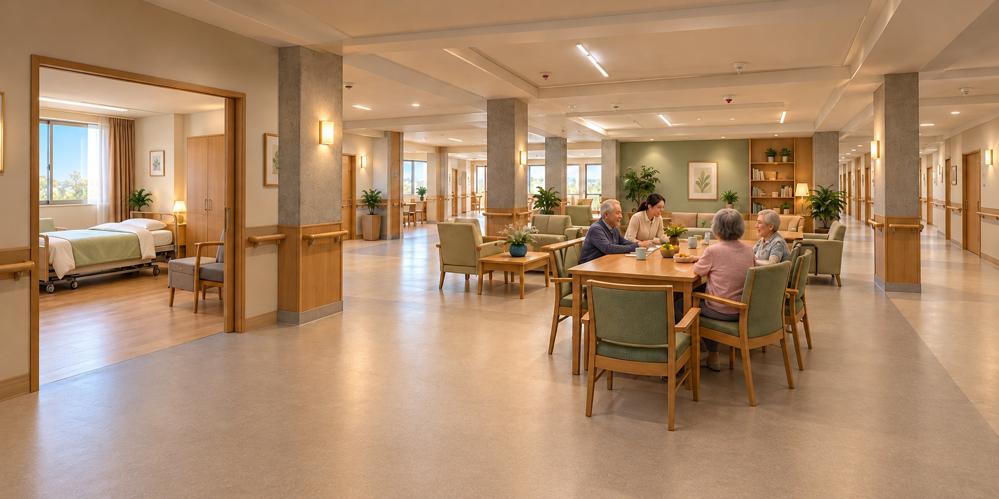

좌우 생활침실
잠을 자고 쉬며 자신의 물건을 보관하는 생활공간입니다. 채광과 창, 수납, 호출, 사생활 보호와 돌봄 접근을 함께 검토합니다. 모든 방을 1인실로 확정한 계획은 아닙니다.
3F · RESIDENTIAL CARE · 용도 확정 2026.10.16
49인 입소형 요양원 계획
좌우에는 생활침실, 중앙에는 공동 거실·식당을 배치합니다. 어르신이 숙식하며 사회복지사·요양보호사의 돌봄을 받는 주거형 생활공간을 준비합니다.
설치신고·장기요양기관 지정 및 입소 모집 전입니다. 정원 49명과 공간 배치는 사업 계획이며 실제 침실 수·면적·피난 적합성은 실측 및 관계기관 검토 후 확정합니다.
잠을 자고 쉬며 자신의 물건을 보관하는 생활공간입니다. 채광과 창, 수납, 호출, 사생활 보호와 돌봄 접근을 함께 검토합니다. 모든 방을 1인실로 확정한 계획은 아닙니다.
함께 식사하고 이야기를 나누며 일상활동에 참여하는 공용공간입니다. 생활침실과 안전한 이동 동선으로 연결합니다.
입소자 본인의 의사와 권리를 존중하고 가족·보호자와 소통합니다. 사회복지사·요양보호사의 지원과 간호·의료연계 체계를 함께 준비합니다.
사회복지사·요양보호사가 업무 중 휴식할 수 있는 독립된 직원 전용 공간을 계획합니다. 입소자 침실·공동 거실과 구분하고 휴식 가구와 환기·냉난방, 소음·시선 차단을 검토합니다.
근무복을 갈아입고 개인 물품을 보관하는 공간을 휴게실과 구분합니다. 잠금 사물함, 탈의 프라이버시와 성별 이용 분리 방식, 세탁물 보관 동선을 설계에 반영합니다.
목욕·위생·급식·세탁과 직원 지원 구역을 나눕니다. 휠체어·침상 이동, 출입 관리, 야간 돌봄과 화재 피난을 설계에 반영합니다.
두 이미지는 공간 관계와 분위기를 제안하는 개념안입니다. 실제 구조·침실 수·49인 수용을 검증한 도면이나 실제 준공 사진이 아닙니다.


2026.10.17 검토 보고서 · 법정 기준과 설계 제안, 확인 전 항목을 구분했습니다. 접수 시점의 법령과 관할 적용을 다시 대조해야 합니다.